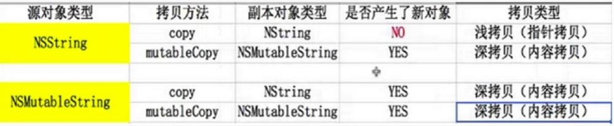

深拷贝与浅拷贝
什么是浅拷贝、深拷贝？
简单理解就是，浅拷贝是拷贝了指向对象的指针， 深拷贝不但拷贝了对象的指针，还在系统中再分配一块内存，存放拷贝对象的内容
如何判断浅拷贝、深拷贝？
深浅拷贝取决于拷贝后的对象的是不是和被拷贝对象的地址相同，如果不同，则产生了新的对象，则执行的是深拷贝，如果相同，则只是指针拷贝，相当于retain一次原对象, 执行的是浅拷贝.

mutableCopy返回的是可变对象，copy返回的是不可变对象。
把一个对象赋值给一个属性变量，当这个对象变化了，如果希望属性变量变化就使用strong属性，如果希望属性变量不跟着变化，就是用copy属性。一般情况下，我们都不希望字串的值跟着NSMutableString变化，所以我们一般用copy来设置string的属性。
1.weak是怎么实现的
在Objective-C中，用__weak修饰的指针，会在所指向的那个Objective-C对象被释放后，自动指向nil。
通俗的解释就是，在Objective-C的运行时环境中，维护了一种weak表，这张哈希表用对象的首地址作为键，将由若干个__weak修饰的指针自身的地址组成的数组作为值。当一个Objective-C对象被释放后，通过这个对象的起始地址来找到所有指向它的__weak指针，并将它们指向nil。
ARC下，编译器会生成一个全局的散列表数组，每个散列表的大小上限为128Byte，取这个数值也是为了和cache line size（64Byte）对齐，对于iOS系统，这个数组的大小为8*128（Byte），可以存放8张散列表SideTable结构体。
一个对象的首地址经过哈希之后可以确定这个对象映射到那个SideTable。
一个SideTable结构体中包含了一个weak_table:
struct SideTable {
//.......
weak_table_t weak_table;
//.......
};
struct weak_table_t {
weak_entry_t *weak_entries;
size_t num_entries;
uintptr_t mask;
uintptr_t max_hash_displacement;
};
根据对象首地址查找weak_entry的方法为weak_entry_for_referent()，可以看到其中对对象首地址做了一次哈希，得到了对应的index。如果发生碰撞，则index依次+1，遍历整个数组，检查是否能获得正确的weak_entry_t对象。
#define WEAK_INLINE_COUNT 4
struct weak_entry_t {
DisguisedPtr<objc_object> referent;
union {
struct {
weak_referrer_t *referrers;//就是这个weak指针指向的对象地址
uintptr_t out_of_line : 1;
uintptr_t num_refs : PTR_MINUS_1;
uintptr_t mask;
uintptr_t max_hash_displacement;
};
struct {
// out_of_line=0 is LSB of one of these (don't care which)
weak_referrer_t inline_referrers[WEAK_INLINE_COUNT];
};
};
};
其中的weak_referrer_t实际就是指向Objective-C对象的指针的地址的类型：
typedef objc_object ** weak_referrer_t;
弱引用销毁过程:
在runtime的代码中，可以找到一个叫做weak_clear_no_lock的方法，它的注释表明，这个方法会被dealloc方法调用，然后将被销毁对象所对应的所有弱引用指针都置为nil。
过程:
- 利用即将被销毁的对象的首地址，找到对应的weak_entry_t。
- 从weak_entry_t对象中获取指向weak_referrer_t数组的指针。
- 遍历这个数组，对于数组中的每个元素，检查是否真的指向即将被销毁的对象的首地址，如果是，则将它指向nil，如果不是则报错。
- 释放这个weak_entry_t对象，并更新weak_table_t中的entry数目。如果有必要，对weak_table_t进行缩容。
补充:
当使用一个__weak指针时，objc_loadWeakRetained()和objc_release()函数都被调用了。
其中objc_loadWeakRetained()会调用retainWeakReference方法，如果某个类重写了retainWeakReference方法并返回NO，则这个__weak指针获取的就永远是nil了。
为什么需要在使用一个__weak指针时调用objc_loadWeakRetained()函数呢:是为了确保在使用这个__weak指针的过程中，指向的对象不被释放。